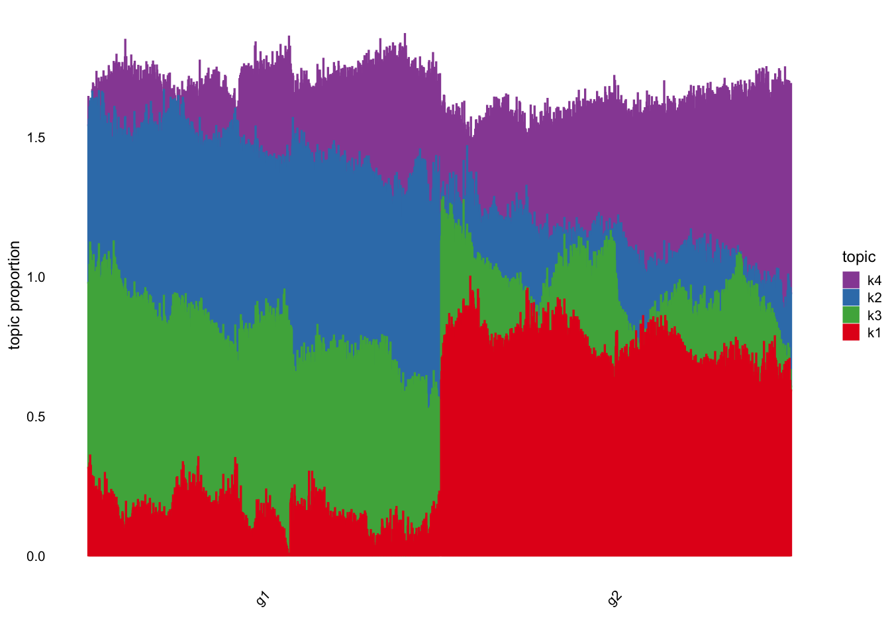
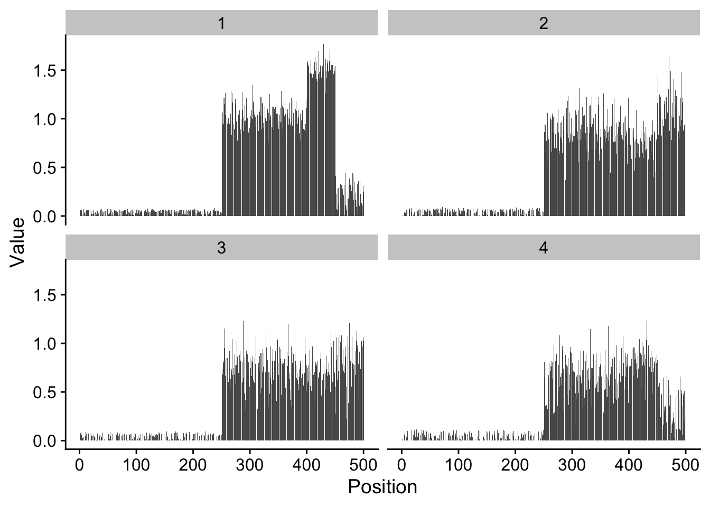

Last updated: 2024-05-20
Checks: 6 1
Knit directory: log1p_experiments/
This reproducible R Markdown analysis was created with workflowr (version 1.7.1). The Checks tab describes the reproducibility checks that were applied when the results were created. The Past versions tab lists the development history.
The R Markdown is untracked by Git. To know which version of the R
Markdown file created these results, you’ll want to first commit it to
the Git repo. If you’re still working on the analysis, you can ignore
this warning. When you’re finished, you can run
wflow_publish to commit the R Markdown file and build the
HTML.
Great job! The global environment was empty. Objects defined in the global environment can affect the analysis in your R Markdown file in unknown ways. For reproduciblity it’s best to always run the code in an empty environment.
The command set.seed(20240402) was run prior to running
the code in the R Markdown file. Setting a seed ensures that any results
that rely on randomness, e.g. subsampling or permutations, are
reproducible.
Great job! Recording the operating system, R version, and package versions is critical for reproducibility.
Nice! There were no cached chunks for this analysis, so you can be confident that you successfully produced the results during this run.
Great job! Using relative paths to the files within your workflowr project makes it easier to run your code on other machines.
Great! You are using Git for version control. Tracking code development and connecting the code version to the results is critical for reproducibility.
The results in this page were generated with repository version e085952. See the Past versions tab to see a history of the changes made to the R Markdown and HTML files.
Note that you need to be careful to ensure that all relevant files for
the analysis have been committed to Git prior to generating the results
(you can use wflow_publish or
wflow_git_commit). workflowr only checks the R Markdown
file, but you know if there are other scripts or data files that it
depends on. Below is the status of the Git repository when the results
were generated:
Ignored files:
Ignored: .Rhistory
Untracked files:
Untracked: analysis/link_simulations.Rmd
Note that any generated files, e.g. HTML, png, CSS, etc., are not included in this status report because it is ok for generated content to have uncommitted changes.
There are no past versions. Publish this analysis with
wflow_publish() to start tracking its development.
Below, I simulate data from a simple model of gene expression in two groups. For genes 1-250, each gene is expressed as Poisson with rate \(0.05\). The next 100 genes are expressed as Poisson with rate \(3\). In group 1, the final 100 genes are also expressed as Poisson with rate \(3\). However, in group two, the last 100 genes are split between Poisson with rate \(1\) and Poisson with rate \(5\).
library(Matrix)
set.seed(1)
n_genes <- 500
lambda_g1 <- numeric(n_genes)
lambda_g1[1:250] <- .05
lambda_g1[251:500] <- 3
lambda_g2 <- lambda_g1
diff_idx <- 401:500
lambda_g2[diff_idx] <- lambda_g2[diff_idx] + c(rep(2, 50), rep(-2, 50))Below is a visualization of the description above:
I simulate \(1250\) cells per group, and store the results as a sparse matrix.
n_cells_per_group <- 2500
Y_g1 <- matrix(
data = 0,
nrow = n_cells_per_group,
ncol = n_genes
)
Y_g2 <- matrix(
data = 0,
nrow = n_cells_per_group,
ncol = n_genes
)
for (i in 1:n_cells_per_group) {
Y_g1[i, ] <- rpois(n = n_genes, lambda = lambda_g1)
}
for (i in 1:n_cells_per_group) {
Y_g2[i, ] <- rpois(n = n_genes, lambda = lambda_g2)
}
Y <- rbind(Y_g1, Y_g2)
Y <- as(Y, "sparseMatrix")
Y <- Y[,Matrix::colSums(Y) > 0]I then fit two Poisson NMF models, one with an identity link and the other with a log1p link.
library(passPCA)
library(fastTopics)
ft_mod <- fit_poisson_nmf(
X = Y, k = 3
)
log1p_mod <- fit_factor_model_log1p_quad_approx_sparse(
Y = Y,
K = 3,
approx_range = c(0, 1.25),
maxiter = 100,
init_method = "frob_nmf"
)Below is a structure plot and a plot of the factors from the identity link model:
structure_plot(ft_mod, grouping = c(rep("g1", 2500), rep("g2", 2500)))Running tsne on 988 x 3 matrix.Running tsne on 1012 x 3 matrix.You can see that instead of one dense factor representing the minimum of the two groups and two sparse factors representing increases relative to that minimum, you can see the model represents all groups as the average of three factors.
For the log1p model, we normalize the results so that the maximum value of each loading is 1. Then, we make the same plots as the model above.
max_col <- apply(log1p_mod$U, 2, max)
log1p_LL <- sweep(log1p_mod$U, 2, max_col, FUN = "/")
log1p_FF <- sweep(log1p_mod$V, 2, max_col, FUN = "*")structure_plot(log1p_LL, grouping = c(rep("g1", 2500), rep("g2", 2500)))Running tsne on 1015 x 3 matrix.Running tsne on 985 x 3 matrix.
log1p_factor_df <- data.frame(
val = c(
log1p_FF[,1], log1p_FF[,2], log1p_FF[,3]
),
factor = c(
rep("1", 500), rep("2", 500), rep("3", 500)
),
pos = c(rep(1:500, 3))
)
ggplot(log1p_factor_df, aes(x = pos, y = val)) +
geom_bar(stat = "identity") + # Use bars to represent lambda values
facet_wrap(~ factor) + # Create a panel for each group
labs(x = "Position", y = "Value") +
cowplot::theme_cowplot() # Use a minimal theme for a clean look
Again, the results are not really satisfactory, as the model represents the cells as an average of 3 dense factors.
sessionInfo()